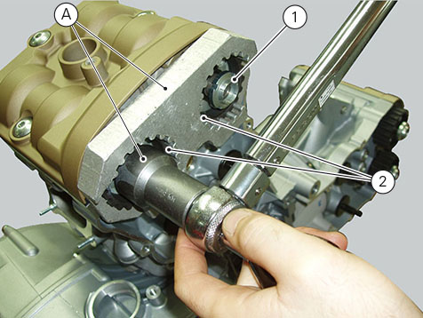
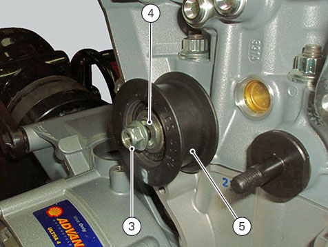

Removing the cylinder head pulley/idler pulley
Remove the seat (
Removing the seat
).
Remove the rear right side body panel (
Removing side body panels and tail guard
).
Remove the front half-fairings (
Removing the front half-fairing
).
Remove the tank fairing (
Removing the tank fairings
).
Remove the fuel tank (Removing the fuel tank
).
Remove the filter box (
Removing filter box and throttle body
).
Remove the oil breather expansion reservoir (
Removing the oil breather tank
).
Disconnect the secondary air hoses (
Refitting the secondary air system
).
Remove the timing outer covers (
Removing the timing outer covers
).
Remove the pulley tensioner/timing belt (
Removing pulley tensioner/timing belt
).
Insert the tool (A) no.
88713.1806
in the pulleys to lock their rotation and use the supplied bush to loosen the fixing ring nuts (21) of the pulleys.
Important
Upon reassembly, always use new ring nuts.
Remove the ring nuts (1) and the pulleys (2) from the camshafts.

Loosen nut (3), and remove washer (4) and idler pulley (5).
Repeat the same procedure to remove the other tensioner.
